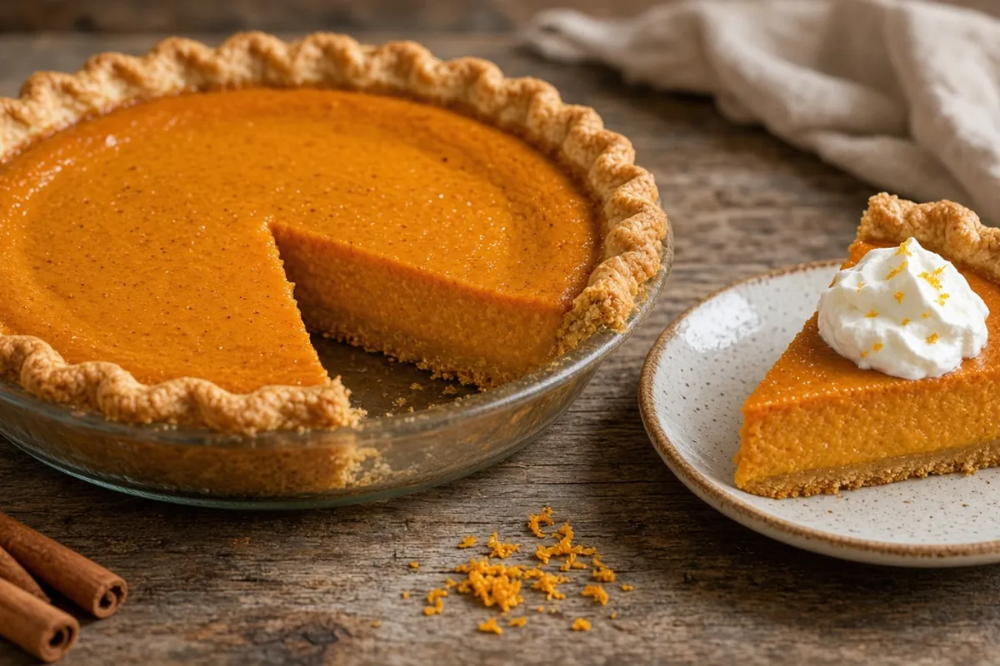

Southern Carrot Pie
A silky spiced custard pie made with fresh carrot purée, brown sugar, evaporated milk and a hint of orange; an old-fashioned Southern holiday dessert.

8 slices
By
Yield: One 9-inch pie (8 slices)
Prep:
Cook:
Cooling: 2 hours
Total:
Difficulty: Easy
Ingredients
- 1 1/2 lb carrots (about 8 medium), peeled and cut into 1-inch chunks
- 1 refrigerated 9-inch pie crust
- 3 large eggs
- 3/4 cup packed brown sugar
- 4 Tbsp butter, melted
- 3/4 cup evaporated milk
- 1 tsp vanilla extract
- 1 1/2 tsp ground cinnamon
- 1/2 tsp ground ginger
- 1/4 tsp ground nutmeg
- 1/8 tsp ground cloves
- 1/2 tsp kosher salt
- 1 tsp orange zest
Instructions
- Fit the pie crust into a 9-inch pie plate, crimp the edge, and chill it while the carrots cook, 5 minutes.
- Cover the carrots with lightly salted water in a large pot and boil until fork-tender, 20 to 25 minutes.
- Drain the carrots and let them steam dry in the colander, 5 minutes (wet carrots make a weepy pie).
- Heat the oven to 350°F with a sheet pan on the lower-middle rack, about 15 minutes.
- Blend the carrots until completely smooth, scraping down once, about 2 minutes; measure out 2 cups of purée.
- Blend the 2 cups carrot purée with the brown sugar, butter, eggs, evaporated milk, vanilla, cinnamon, ginger, nutmeg, cloves, salt, and orange zest until smooth, 30 seconds.
- Pour the filling into the crust, set the pie on the hot sheet pan, and bake until the edges are set, the center has a slight Jell-O jiggle, and the center reads 175°F, 50 to 60 minutes. If the crust edge browns fast, tent it with foil at about 35 minutes.
- Cool the pie on a rack until set, at least 2 hours, before slicing.
Notes: Serve at room temperature or cold with whipped cream. This is a custard pie, so keep it covered in the fridge; it keeps 4 days.